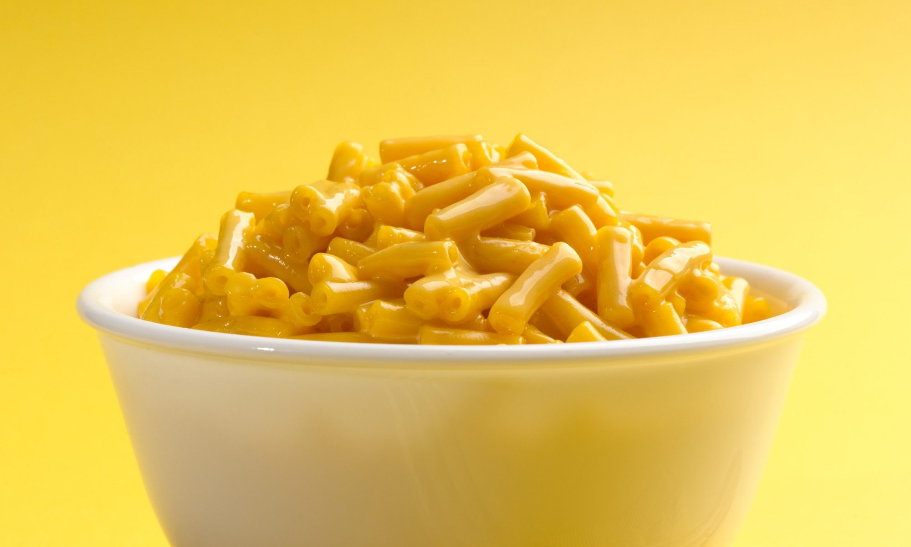

Odin's Mac n Cheese

Kraft Mac-n-Cheese. Straight from the box it's easy to make and easy to make for our family. Simple ingredients and no hassle.
Ingredients
- Kraft Box MacnCheese
- Milk
- Butter
Directions
- Boil water.
- Add box noodles to boiling water.
- Boil for 9 minutes or until done.
- Drain noodles.
- Add butter and cheese packet.
- Add milk and mix until desired consitancy.